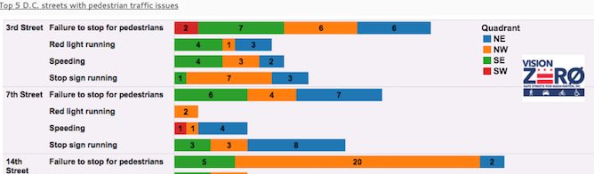

Congrats You Budding Data Scientists!
You've learned much data, many code, lots science.
Let's talk about data outside the classroom.
Kate Rabinowitz
@datalensdc
Hi! I'm Kate!
You might know me from DataLensDC, Code for DC, or Tech Lady Hackathon.
I like all things data and DC, plus healthy skepticism and board games.
Finding Open Data
Data.gov! Nearly Two! Hundred! Thousands! Datasets!

Well, actually...

Data.gov is valuable and great to peruse, but the number of datasets may make you more excited than you should be.
More than half of the data is from two agencies (NOAA and Fish and Wildlife Services) and the majority is geospatial.
Much of the data is not a format that cannot quickly be visualized.
If I know the agency owner, I typically just go to the agency's website.
Open Federal Government Data is Pretty Great
It's good to be skeptical, but let's not get too crazy here...

And let's remember informed skepticim is the best skepticism
(Congressman Webster at a 2012 hearing on defunding the ACS)
Generally Held Geographic Groupings

So many levels of granularity! Some have more consistent (MSA) definitions than others (Regions). Do consider how the geographic level can impact the data.
So Many Cities! So Much Data!
In So Many Places! With So Little Consistency!
DC open data can mostly be found at opendata.dc.gov. The site is by no means comprehensive. One time I tried documenting all the places to find local DC data. There are a lot. Code for DC's data portal can help you put it all together.
American cities' open data portals, ranked:
US City Open Data Census
This can get a little messy
A lot of local data (taxi trips, permits, inspections, etc.) does not have a long history of being used for research and policy and lacks the infrastructure (or did so until very recently) for accurate, complete and clean open data reporting. Documentation is often sparse.
FOIA: The Data You Want to Have, And They Don't
I'm being dramatic.
There is a good amount of government data made open. There is a lot of government data not that is open. There are many reasons for this. In many cases, you have the right to this data. You can FOIA for it.
Anyone can FOIA for data.
FOIA: A worthy challenge!
You are freeing data into the world! What a joy!
Know that: your request should be as specific as possible because officals aren't always keen to fill in the blanks, delivery of data may be much longer than 15 days, you may have to pay, and the data will probably be in a terrible format.
You are freeing data into the world! What a joy!
How to FOIA
Where you should FOIA: Muckrock
Where to learn more on how FOIA works: Reporters Committee for Freedom of the Press
How to FOIA DC data: Check out my guide
What you should FOIA: Everything.
The Government Isn't the Only Place to Find Data
Newspapers increasingly make their data available. 538 does it the best. Washington Post collects data on police shootings.
Companies have data. For some, like Kaggle, open data is a part of their model. For most, it's not. Getting that data is often a little more complicated, expensive, and/or shady.
But where is, like, the cool data?
For when you're on the hunt for inspiration
- Data is Plural by Jeremy Singer-Vine
- An archive of Jeopardy! The coordinates of Waldo for every Where's Waldo! Annotated Classical Music! All Known Satellite Launches Since 1957!
- Awesome Public Datasets by Xiaming Chen Data Portal to London's Natural History Museum! Cancer! A Million Songs!
- @cooldatasets
- 2,600 Ted Talks*! 11,000+ proposed Constitutional amendments since 1787! 100 cities' open data sites!
Trusting Data*
*Never
In many cases, data is an abstraction of reality.
Just how abstract is important.
Your analysis, modeling, and visualizations will only ever be as good as the underlying data.
So Local! So Cool!

Watch Your Margins of Error
If you see an anomaly
(especially in city-level data)
first assume it's a result of design,
and research accordingly.
An Anomaly: Was 1900 a Boom Year for DC Home Construction?
No. When the year a historical home was built is not known, it's coded as 1900.
An Anomaly: Almost No Maryland Inspection-Related Parking Tickets? Vast DMV Conspiracy?

No. This is a result of differences in state laws.
How data is collected can be even more telling than the data itself.
A Vision Zero Example
In July 2015 DC's Vision Zero initiative, to reach zero transit-related fatalities by 2020, released an app allowing citizens to report pedestrian, bike, or driving safety problems.
The data has also been made publicly available, which is great!
But we must be responsible in how we use that data.
A Vision Zero Example: What's Wrong with These Charts?
Source: District Ninja, District of Pedestrians
A Vision Zero Example: What's Wrong with These Charts?
Source: District Ninja, District of Pedestrians
In Most Cases A Company's Data is Just That, Their Data
This is not reflective of DC apartments, but rather DC apartments listed on Zumper. That can be a big difference.
Read More: All Those Reports About DC Rents? Best to Take Them With a Grain of Salt
To truly love data, you must know it's flaws and help it be it's best self
And that's why you should read and bookmark Quartz's Bad Data Guide
Let's Data "Science"*
*Which is to say let's take some imperfect data and make some imperfect decisions
Data science is full of judgment calls from data cleaning to modeling to visualization.
Data Selection isn't Always A Neutral Act
Source: ME!, DC's Expensive, but that's not the Whole Story
How You Choose to Summarize Data Impacts Your Viz, Your Models
Source: Lisa Charlotte Rost, Styling Choropleth Maps
Your Design Choices Can Drastically Alter the Story

Source: Andy Cotgreave, Iraq's Bloody Toll
Data Decisions Can Have Far-reaching Impacts
Wow. That Got Dark.
But, hey, Data Science is Fun and Important!
If nothing else please remember these three things:
- Be an informed skeptic.
- Data is created and manipulated by humans.
- Open source all the things.
Thanks for having me!
You can find me via
Twitter: @datalensdc
Github: https://github.com/katerabinowitz
E-mail: datalensdc@gmail.com